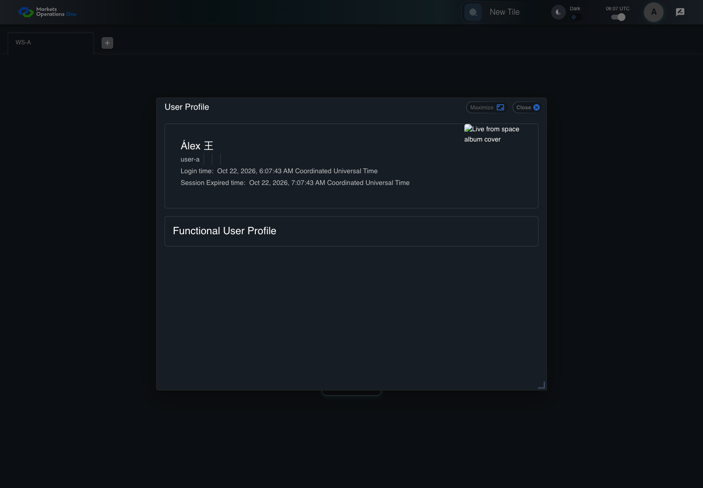

AUTH-039 profile preserves directory text
PASS · application/run-050/auth-039-profile-preserves-directory-text-13e7762d787a-attempt-1 · ACTUAL_APPLICATION_LOCAL_SERVICES
Actual React; controlled callback/login responses; unsigned browser-only credentials; empty seeded WS-A. Provider acceptance and BFF fallback are not verified.
2026-10-22T06:07:42.067Z to 2026-10-22T06:07:45.537Z
Assertions and result · Artifact manifest · Exact run inputs and source hashes
Result SHA-256:ce5ddd4daf961eaa76485aa4ab17b14275ff080972259406d5ac2a88f183fe38Machine observations
- directory-response-fixture.json
b79a4897d24bc3afc5d4990418eeb40a4b8a6daa7903c0ed9ed972ee6e88e320 - profile-assertions.json
ac1dafbdc66d93f04a5366d569774a2dd64ed9eaeccd24b2862bf70b7f53b40b
Screenshot capture: CAPTURED. Named frames: 11.
Step screenshot evidence: COMPLETE. 10/10 canonical steps have execution screenshots.
Canonical step timeline
Given User A is an entitled fixture user in an isolated browser context with empty browser storage
Execution: PASSED.
1. step-01 Visible state after step 1: Given User A is an entitled fixture user in an isolated browser context with empty browser storage
2026-10-22T06:07:42.937Z · 1440×1000
Step: /Users/lushevol/code/github/ratan-release-impact/workbench/tasks/ui-test-coverage-20261022/test-cases.md:1534
SHA-256:f6681a39e8f7702be9d0264aceecd72753062b0cc58016f7484f14e228d1cd35And the LOCAL login page is visible; the credential service accepts user-a / FixturePass1!; login returns oud.fullName="Álex 王"
Execution: PASSED.
2. step-02 Visible state after step 2: And the LOCAL login page is visible; the credential service accepts user-a / FixturePass1!; login returns oud.fullName="Álex 王"
2026-10-22T06:07:43.230Z · 1440×1000
Step: /Users/lushevol/code/github/ratan-release-impact/workbench/tasks/ui-test-coverage-20261022/test-cases.md:1535
SHA-256:664babd84ff6d7926ad8e99d7a4bbde727c1a202e01dd31a587c9d3836eefb38When User A enters "user-a" into the textbox with placeholder "Enter Username" on the login page
Execution: PASSED.
3. step-03 Visible state after step 3: When User A enters "user-a" into the textbox with placeholder "Enter Username" on the login page
2026-10-22T06:07:43.484Z · 1440×1000
Step: /Users/lushevol/code/github/ratan-release-impact/workbench/tasks/ui-test-coverage-20261022/test-cases.md:1536
SHA-256:ef27de9dae5b857aa7028ff3b8e4dbc09734687b02ca43a5e85a6d80e2774d08And User A enters "FixturePass1!" into the text input with placeholder "Enter Password" on the login page
Execution: PASSED.
4. step-04 Visible state after step 4: And User A enters "FixturePass1!" into the text input with placeholder "Enter Password" on the login page
2026-10-22T06:07:43.757Z · 1440×1000
Step: /Users/lushevol/code/github/ratan-release-impact/workbench/tasks/ui-test-coverage-20261022/test-cases.md:1537
SHA-256:a95c65ca56c073467578ce17791e68d1a172bbb8fca78688af2ee4dba65b174fAnd User A clicks the button labelled "Sign In" on the login page
Execution: PASSED.
5. step-05 Visible state after step 5: And User A clicks the button labelled "Sign In" on the login page
2026-10-22T06:07:44.075Z · 1440×1000
Step: /Users/lushevol/code/github/ratan-release-impact/workbench/tasks/ui-test-coverage-20261022/test-cases.md:1538
SHA-256:4d745c8f55188763e94851fe67201b5f19083469ba6fca575040044b0679afb0Then the tab labelled "WS-A" inside the tablist named "workspaces" on the Home page is visible
Execution: PASSED.6. step-06 Visible state after step 6: Then the tab labelled "WS-A" inside the tablist named "workspaces" on the Home page is visible
2026-10-22T06:07:44.161Z · 1440×1000
Step: /Users/lushevol/code/github/ratan-release-impact/workbench/tasks/ui-test-coverage-20261022/test-cases.md:1539
SHA-256:4d745c8f55188763e94851fe67201b5f19083469ba6fca575040044b0679afb0When User A clicks the icon button with test ID "${MFE_APP_PREFIX_STYLE}_avatar_IconButton" in the portal header on the Home page
Execution: PASSED.7. step-07 Visible state after step 7: When User A clicks the icon button with test ID "${MFE_APP_PREFIX_STYLE}_avatar_IconButton" in the portal header on the Home page
2026-10-22T06:07:44.337Z · 1440×1000
Step: /Users/lushevol/code/github/ratan-release-impact/workbench/tasks/ui-test-coverage-20261022/test-cases.md:1540
SHA-256:2fa04508ba5d69778a4bc0a96e7d144baf785a4d6dd7ad533b9143ca21e0cbceAnd User A clicks the menu item containing "Álex 王" inside the menu with DOM ID "menu-appbar-avatar"
Execution: PASSED.8. step-08 Visible state after step 8: And User A clicks the menu item containing "Álex 王" inside the menu with DOM ID "menu-appbar-avatar"
2026-10-22T06:07:44.570Z · 1440×1000
Step: /Users/lushevol/code/github/ratan-release-impact/workbench/tasks/ui-test-coverage-20261022/test-cases.md:1541
SHA-256:b36fefd7a949b24e06bd5d1084e4b49e6f1c7c00484805312efbf89b5e48144eThen the text "Álex 王" is visible inside the dialog titled "User Profile" on the Home page
Execution: PASSED.9. step-09 Visible state after step 9: Then the text "Álex 王" is visible inside the dialog titled "User Profile" on the Home page
2026-10-22T06:07:44.645Z · 1440×1000
Step: /Users/lushevol/code/github/ratan-release-impact/workbench/tasks/ui-test-coverage-20261022/test-cases.md:1542
SHA-256:b25b5ed56d505c224ae537701abfee0bd0051b88a63f3b55d7724fad5f1bbf9cAnd the text inside the dialog titled "User Profile" on the Home page contains no replacement character "�"
Execution: PASSED.
10. step-10 Visible state after step 10: And the text inside the dialog titled "User Profile" on the Home page contains no replacement character "�"
2026-10-22T06:07:44.712Z · 1440×1000
Step: /Users/lushevol/code/github/ratan-release-impact/workbench/tasks/ui-test-coverage-20261022/test-cases.md:1543
SHA-256:b25b5ed56d505c224ae537701abfee0bd0051b88a63f3b55d7724fad5f1bbf9c
Additional named frames

The final visible state after the named test assertions.
2026-10-22T06:07:44.856Z · 1440×1000Step: Test source: /Users/lushevol/code/github/ratan-release-impact/workbench/e2e/audit-specs/callback-profile.spec.ts:103
SHA-256:
9a500b552dff85a45f365fe6602a7ea7ba89ebbf876bd681c3d573be5f577e8bScreenshots establish visible state only. Assertions and traces support functional claims.